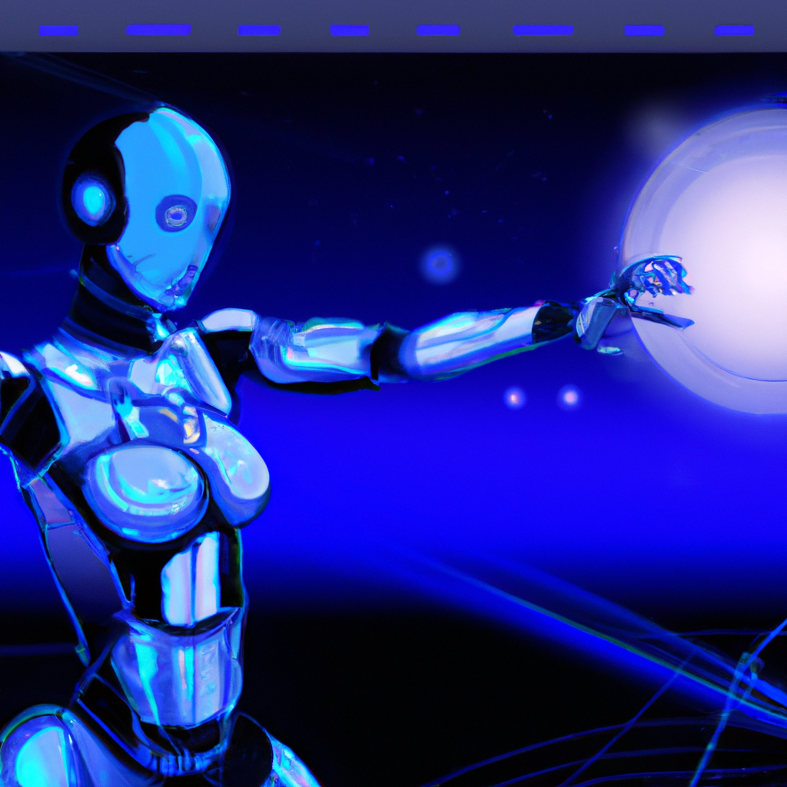

The future of robotics and AI
In today's rapidly advancing technological landscape, robotics and artificial intelligence (AI) are playing an increasingly prominent role. As a robotics engineer, I am constantly amazed by the capabilities of these technologies and the potential they hold for shaping our future.
One of the most exciting aspects of robotics and AI is their ability to revolutionize industries and solve complex problems. From autonomous vehicles to medical robots, these technologies are pushing the boundaries of what is possible and opening up new possibilities for innovation.
Machine learning, computer vision, and deep learning are just a few of the cutting-edge technologies that are driving the field of robotics forward. By harnessing the power of these tools, we can create robots that are more intelligent, adaptable, and capable than ever before.
As someone who is passionate about STEM education, I believe that it is crucial to inspire the next generation of innovators and problem solvers. By showcasing the incredible potential of robotics and AI, we can encourage young people to pursue careers in these fields and help shape the future of technology.
In my blog, I aim to explore the latest developments in robotics and AI, discuss the challenges and opportunities that lie ahead, and inspire others to join me in shaping the future of technology. Together, we can unlock the full potential of robotics and AI and create a brighter future for all.